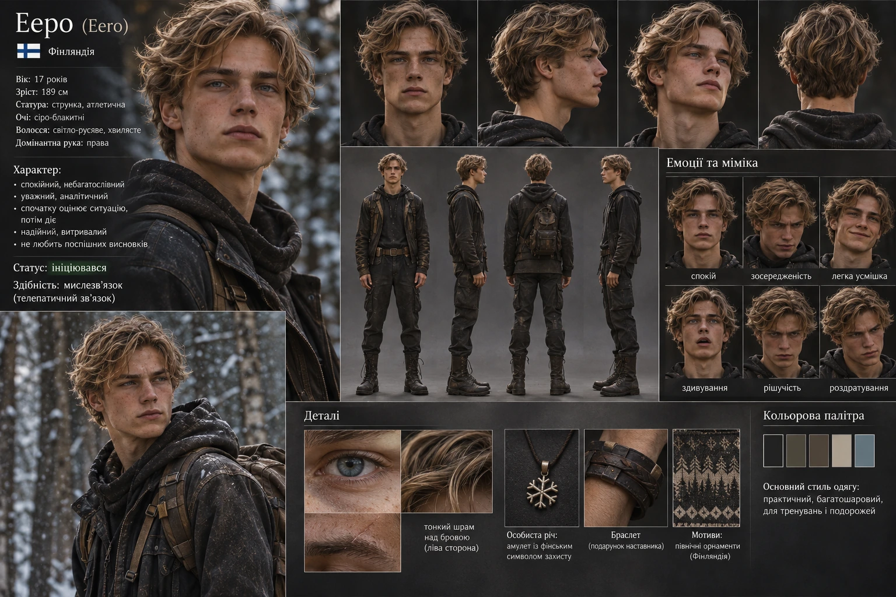

ХАРАКТЕР І ПОВЕДІНКА
Спершу спостерігає, потім діє
Ееро стриманий і уважний. Він не поспішає з висновками та ставить запитання, які допомагають розібратися в нових для нього явищах. У спілкуванні з іншими учнями не прагне бути в центрі уваги, але бере активну участь у спільному навчанні.
Аналітичність, витривалість і надійність додатково зафіксовані у візуальному патерні образу; це характеристики образу, а не окремо підтверджені сюжетні події.
НАВЧАННЯ ТА ЗДІБНОСТІ
Мислезв’язок і портали
Після ініціації Ееро разом із Люсією, Харуто й Імані опановує мислезв’язок. Під час однієї зі сцен Харуто чує думку Ееро, хоча той не промовляє її вголос. Згодом учні вчаться свідомо передавати одне одному конкретні образи.
Ееро також входить до четвірки новоініційованих учнів, які тренуються відкривати портали. Мольфар допомагає їм відчути цю навичку через зв’язок з Алісією. Навчання потребує практики: учні припускаються помилок, втомлюються й поступово вчаться контролювати переходи.
Семеро учнів Мольфара добре володіють шаблями й прагнуть удосконалювати цю майстерність. Ееро належить до цієї групи.
ПАТЕРН ПЕРСОНАЖА
Довідкові характеристики
Зовнішність і фізичні параметри
- 17 років; зріст 189 см; струнка, атлетична статура.
- Сіро-блакитні очі; світло-русяве хвилясте волосся.
- Тонкий шрам над лівою бровою; домінантна рука — права.
Одяг та особисті речі
- Практичний багатошаровий одяг для тренувань і подорожей.
- Амулет із фінським символом захисту.
- Браслет — подарунок наставника.
- Мотиви північної фінської орнаментики.
Канон і походження відомостей
Сюжетні відомості звірені з третьою наданою книгою. Вік, зріст, зовнішність, шрам, домінантна рука, амулет і браслет узяті з погодженого візуального образу. Якщо наступна редакція книги змінить ці дані, сторінку потрібно буде оновити.